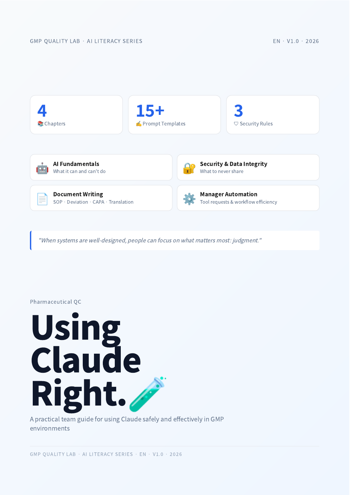

Teaching · 2 artifacts
Educational artifacts for regulated work.
Two open-access teaching pieces I built for analysts entering a GMP-regulated environment — bilingual, free to use, designed to teach without lecturing.
Both pieces ran with new analysts on the team I work on. Both are research prototypes as much as teaching tools — they let me test how onboarding interfaces shape practitioner reasoning before bad habits set in. Future work: study them as interventions, not just as artifacts.
📖 AI Literacy Cookbook

📖Cookbook cover
(image not yet uploaded)
How to Actually Use Claude
A GMP Quality Lab AI Literacy Series.
Four short chapters on what AI tools can and can't do for regulated analysts: capabilities & limits, data security, document writing, and workflow integration. Written from inside a working QC team — every example comes from real lab situations.
Bilingual · 한 / EN
Open access
CC BY 4.0